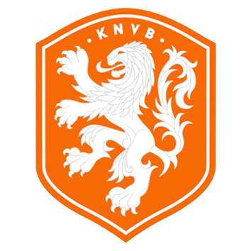
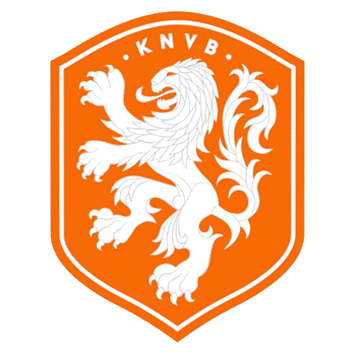

La batalla de Lusail:
La batalla de Lusail, fue apodado por la prensa al partido disputado por cuartos de final entre Argentina y Países Bajos, debido a la cantidad de amonestados (15) y al juego fuerte. El partido se calentó en la previa debido a las declaraciones del DT Países Bajos, Louis Van Gaal. En un partido reñido, y con una magistral asistencia de Messi a Molina, Argentina empezó a llevar la ventaja. La misma se amplió con un penal en el segundo tiempo a Acuña, que Messi convirtió en gol. Van Gaal al ver que Argentina se había puesto dos a cero, mandó a la cancha a sus jugadores más altos para poder descontar de cabeza. Lo logró a los 83 minutos por medio de Weghorst. El mismo jugador fue el que marcó el empate el minuto 10 de descuento por medio de una jugada preparada en un tiro libre. En el tiempo extra, el único que quiso ganar el partido fue Argentina. Enzo Fernández pegó un tiro en el palo con un remate desde afuera del área. En la tanda de penales, el Dibu Martínez se vistió de héroe, y atajó los dos primeros penales. Más allá del fallido penal de Enzo Fernández, Argentina se impuso en penales 4 a 3 y logró el boleto a la semifinal. En Argentina por penales convirtieron: Messi, Paredes, Montiel y Lautaro Martinez quien gracias a su penal clasificamos a cuartos. Enzo Fernández tiró su penal afuera. Por el lado de Países Bajos convirtieron: Koopmeiners, Weghorst y De Jong. Los penales de van Dijk y Berghuis fueron atajados por el gran Dibu Martinez. Luego de finalizado el partido, se hizo viral el "Anda pa' lla bobo" de Messi a Weghorst; el Topo Yiyo que Messi le hizo a Van Gaal luego de convertir su gol, y el festejo de los jugadores de Argentina.
 
